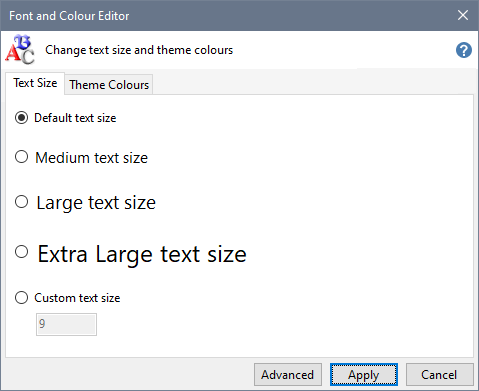

Click the Text Size tab, select the text size you want to use and press Apply.

Use Custom text size to specify your a text size value between 9 and 30.
Click Advanced to change which fonts are used or alter the text size of specific elements of the Installer Tool's user interface.
When you press Apply, the Installer Tool restarts to apply your changed text size preferences.
Change text size